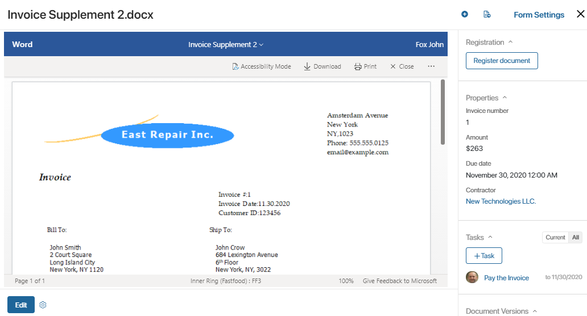
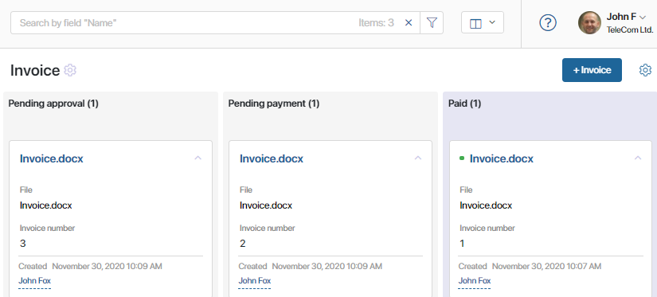
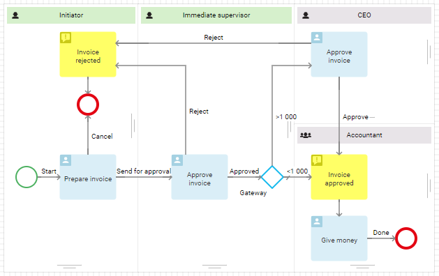
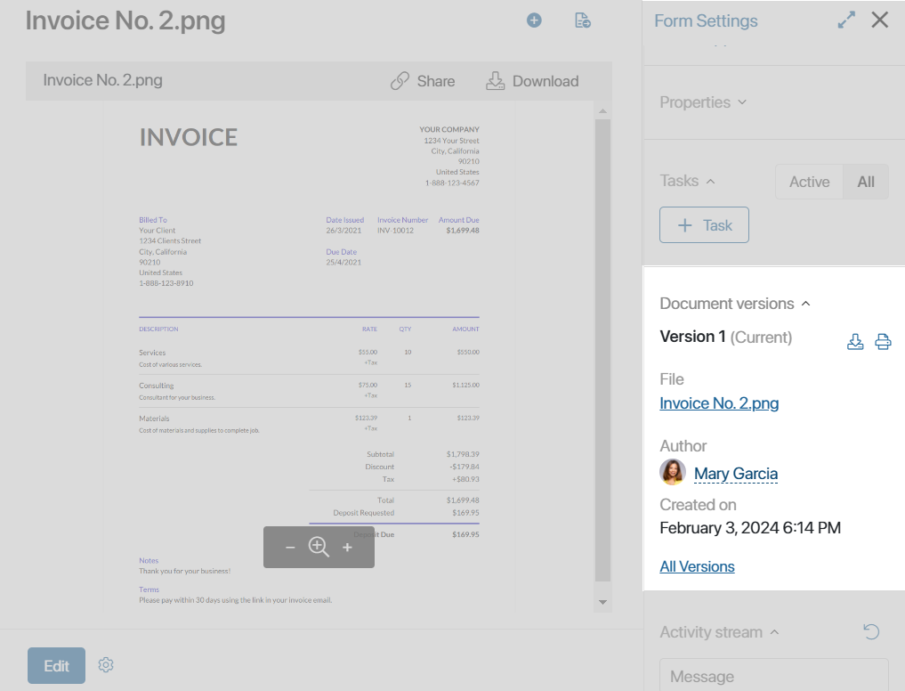
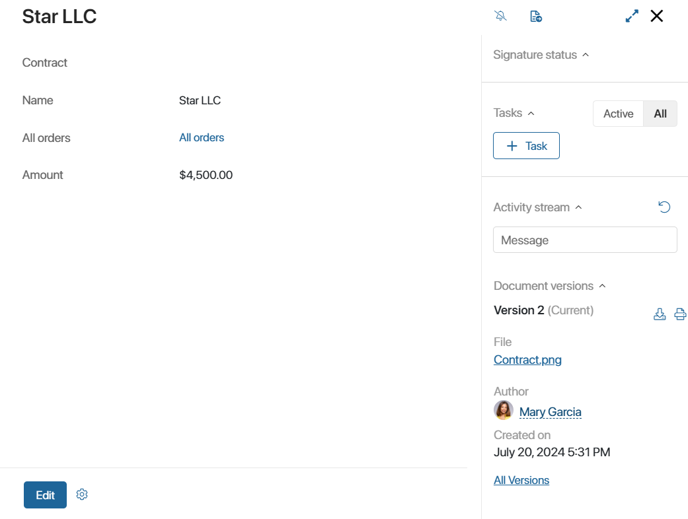

When introducing document management workflows in BRIX, you can work both with files and document type apps. There are some conceptual differences between them.
начало внимание
Document page settings, statuses, custom document routes, and registration are available only when working with Document type apps and are not available for files.
конец внимание
Files
BRIX supports the following file types: Word, Excel, PowerPoint, images, audio, and video files. Please note, that the system administrator can restrict the uploading of certain file formats.
There are several ways to upload a file:
- In the Files workspace. Files uploaded to this workspace can be viewed, edited, sent in chats and channels, and moved between folders. You can manage file access permissions, add new versions, and send them for approval or information. You can enable the version history for such files.
- Uploading them to the Files-type field on an app item or task page. These files can be viewed and handled within a business process, for instance, edited or sent for approval. Also, version history is available. To learn more, see System data types. Also, these files can be saved to the Files workspace. All the actions with files will become available.
- Send a file in a chat or attach it to a comment in a channel. Such files can also be saved to the Files workspace. To learn more, see Share files in chats and channels.
Document type apps
Document type apps are used to create electronic documents. Each electronic document is a page and a file with the document contents.

An electronic document: on the left you can see the file, on the right – the document's properties
A page is a form that contains a set of unique characteristics that describe a document. For example, an invoice form can have such properties as Approved by, Amount, and Payment due. These properties can be used to filter or search documents by specific parameters. Depending on the type of the document, you can change the set of properties on the form.
Documents have several advantages over files. For example, you can set up your own statuses for each document type and track its progress. For instance, for an invoice, you can add such statuses as Pending approval, Pending payment, Declined,or Paid. By taking a look at an invoice form you will be able to see at which step of the cycle it currently is.

All the stages of document processing make up a route. You can automate document routes through business processes. This will ensure that every stage has a user assigned to it, and the next stage starts only when all the previous tasks are completed.
The routing logic may depend on the contents of the document or its properties. Suppose an employee creates a new invoice in the system. On the document form, they specify the amount to be paid, after which the approval process starts. If the amount is insignificant, then the invoice will be sent to the line manager. Otherwise, the CEO will be additionally involved in the approval.

Users can add information to the document while the process is executed. This data will be saved on the document form and will be available to the users with sufficient access permissions.
Documents, unlike files, can be registered in the system. Registration helps manage documents of a company by giving a document its own registration number.
To learn more, see How to configure a document route.
File versions vs Document-type app file versions
For files uploaded to BRIX, version history is available. This means that users can add a new version to a file created earlier. The previous version is marked as outdated. Also, it is possible to view the list of all the previous versions, compare them, and replace the current versions with one of the older ones.
For Document type apps, version history is always enabled. All the versions are shown on the view page side panel. To learn more, see Version control and document comparison.

For files uploaded to a Files-type field on pages of standard apps or tasks, you should enable and set up version history. Added versions will also be displayed on the page where the Files-type field is located.
